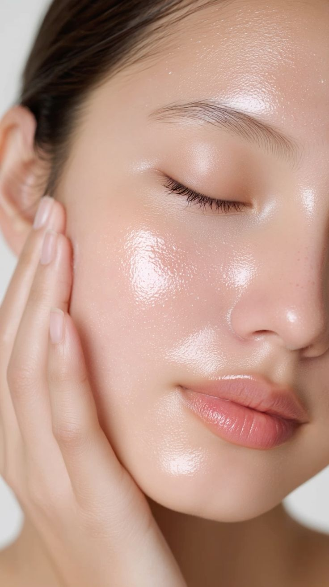

Product Finder
Curated cosmetics recommended for all skin types.

Normal Skin Routine
Balanced hydration and radiance. Ideal for dewy or satin editorial finishes.
- Primer: Illuminating Dewy Primer
- Foundation: Hydrating Satin Fluid Base
- Setting: Luminous Glow Mist
Combination Skin Routine
Addresses an oily T-zone while safely maintaining skin moisture balance on the cheeks.
- Primer: Pore-Blurring Gel Primer
- Foundation: Semi-Matte Longwear Foundation
- Setting: Translucent Loose Setting Powder
Oily Skin Routine
Controls oil production and micro-shine with targeted all-day matte choices.
- Primer: Ultimate Mattifying Oil Control Gel
- Foundation: Oil-Free Full Coverage Matte Base
- Setting: Matte Finish Oil-Control Spray